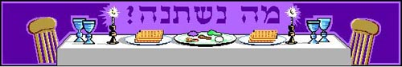

Learn how to conduct your Passover Seder online; lead the blessings, sing the melodies and prayers of the Passover Haggadah. Audio clips also available for download.

Passover Seder (Haggadah shel Pesach)
Here are audio clips of the major portions of the Haggadah that are recited during the Passover Seder - to help
you learn how to better conduct your own seder at home.
* Because of the great variety of printed haggadot, you may find slight variations from the text you use.
These clips are only of the selections that are typically sung during the Passover Seder. We have not recorded hagadah passages that are
read aloud or simply davened (chanted) without a set melody - such as karpas, 10 plagues, hamotzi, etc.